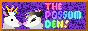
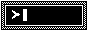

Weird Waves
Booth
Control your playlist here—you can also add shows or series from the Archive.
Playlist
-
Clear
playlist?
Import & export
To export your playlist, copy the text below to a safe place. To import, paste the data back into the box, then click the button to rebuild the playlist. You can also use this to quickly re-order your playlist.
Archive
This list includes information about every show available on the site.
About
Weird Waves is a fake radio station broadcasting horror and weird fiction! You can find shows in the Archive, check or re-order your playlist in the Booth, and listen to them in the Radio. Have fun!
News
For site news, see the News Archive. This is now rarely updated.
Content notes
Aside from specific notes in the Archive, there's also a few general ones: death and worse fates (this station's mostly for horror) and implicit bigotry in the older sources (I weed out the worse ones, but the rest still reflect their time).
Credits
For shows, check the Archive.
For fonts, check the Settings.
The app is hosted on Neocities.
Everything else by Speak the Sky/Murder_VT!
Stats
Series stats
Streaming
This section covers how to use Weird Waves to provide audio background as a livestreamer, e.g. on Twitch. Make sure to check out the Settings as well.
Widget
To use Weird Waves like a stream widget in software like OBS:
- Create a browser source.
- Set its URL to
weirdwaves.net. - Delete its default custom CSS.
- Resize and crop it.
- Right-click it and select “Interact” to use it just like you are now.
To add more empty space above and below the radio, add this custom CSS:
#radio {
margin-block: 100vh;
}Customising the theme
Set the theme to “Dark”, then add this custom CSS:
.theme-dark {
--foreground-colour: [colour];
--background-colour: [colour];
--hot-detail-colour: [colour];
--cold-detail-colour: [colour];
}Replace the colours with your own colour values. These can be any valid CSS colours: hex codes, RGB values, HTML colour names, etc.
Customising the font
Set the font to “Serif”, then add this custom CSS:
.font-serif {
--font-stack: [font];
}Replace the font with the name of any font installed on your computer. If the name includes a space, wrap the whole name in quotes (e.g. "Comic Sans").
Copyright?
All LibriVox recordings (the LibriVox selection and several other series in the Archive) are in the public domain.
The copyright status of old radio broadcasts is murky, but they're de facto public domain—any person or organisation who could press a claim is long dead or gone. This isn't legal advice, but… nobody (BBC aside) cares about the atom-thin penny shavings you'd make from streaming ancient, commercially-irrelevant radio broadcasts on Twitch.
If you're still concerned, switch on the following toggle to exclude more-recent copyright series/sources when adding random shows or the entire archive to the playlist: CASiana, Mindwebs, Nightfall, and Seeing Ear Theater.
Settings
Control how Weird Waves looks and functions here. Unless you prevent this site from storing data in your browser, these settings will be remembered when you return to Weird Waves.
-
Radio
-
Content notes
-
Site theme
-
Site font
The serif font is Bitter by Sol Matas. The sans-serif font is Fira Sans by Carrois Type Design and the Mozilla Foundation.
-
Widescreen radio position
Call In
Got questions, feedback, feature requests?
Links
If you like Weird Waves, you might like some of these places too.
Other stations
- 🌕
- Radio Soyouz (128kbps)
- Radio New Vegas GPT
- 
- Polushon
- Repetitive Strain
- PUNC
- Radio is a Foreign Country
Old Time Radio info
- OTR Plot Spot
- Radio Echoes
- The Digital Deli (via Internet Archive)
- Awake at Midnight
- Escape and Suspense!
- The Vintage Radio Place
Toys, tools, apps, games
Streamers
Anything else

- Home Video Horrors

- 
- Beyond Dream's Doors
- PseudoPod
- guru
- Laird Barron Mapping Project
- Watashi
- Eldritch Dark
- The End of the Earth
- Now we are all… // Journey
Weird Waves buttons
Welcome to Weird Waves!
Weird Waves is an audio horror site where you can explore the classics and hidden gems of 20th-century radio plays and public-domain audiobooks featuring the weird and the disturbing!